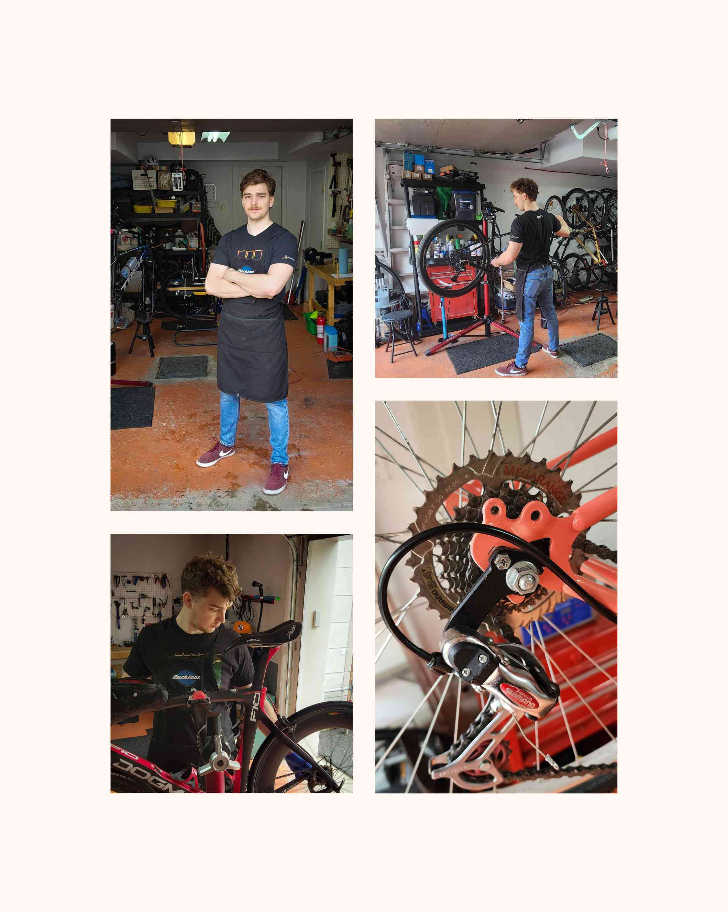

Atelier de vélo Arpin
Hi 👋! My name is Alexis Arpin and I offer bike repair and maintenance
services on Nun's Island. I am located at 70 rue de l'Orée-du-Bois O,
in the south end of the island.
To take an appointment,
please contact me by phone at 514-757-4355,
by email at atelier.arpin@gmail.com,
on Facebook or via the button below.
See you soon!
Basic Maintenance
General inspection of the bicycle, adjustment of the brakes and speeds, chain lubrification, and verification of tire pressure. Ideal to keep your bike in a good state in between rides.
Intermediate Maintenance
Adjustment of rollings, complete ultrasonic cleaning of the transmission, replacement of all cables, chains and brakes, alignment of wheels, plus everything that is included in the basic maintenance tier. An excellent option to maintain optimal performance.
Complete Maintenance
Complete dismantling of the bicycle for a detailed cleaning, inspection and replacement of used parts, and precise adjustment of each component for like-new riding.
A young, friendly and conscientious mechanic!
Facebook Comment, June 2024.